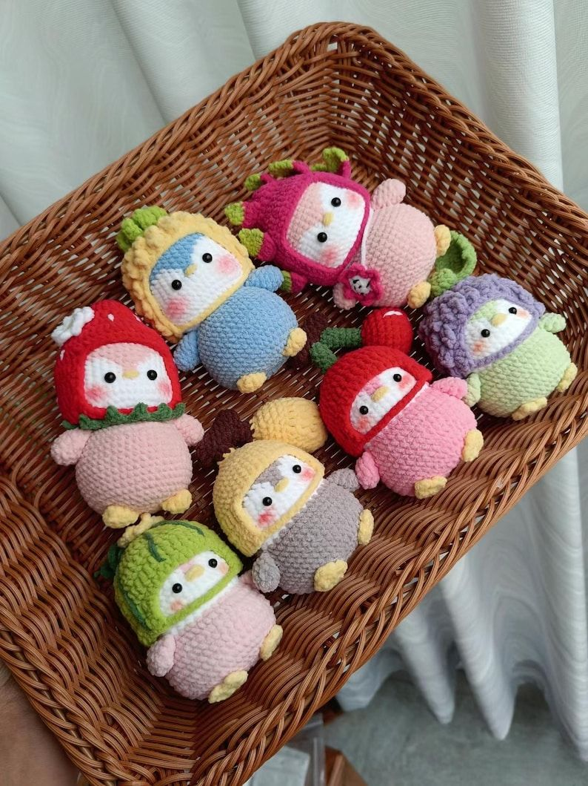
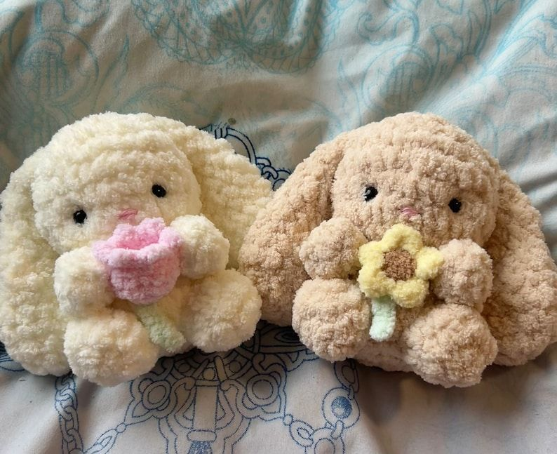

Welcome to My Crochet Hobby!
Crochet is a timeless craft where yarn is transformed into beautiful creations using just a hook. Whether you’re a beginner or an expert, crochet welcomes all!

About Crochet
- Originated in the 19th century and spans cultures worldwide.
- Requires only yarn, a hook, and creativity!
- Reducing stress, promoting mindfulness and joy.
- Makes gifts, home decor, fashion, and art.
- Popular stitches: single, double, shell, granny square.
- Online crochet communities are welcoming and inspiring.

Project Inspiration
Try making an amigurumi animal, a cozy blanket, or a stylish hat. Choice of yarn and color makes each project unique!
- Blankets and throws
- Colorful scarves & hats
- Amigurumi plushies
- Mandala wall art

Learn the Basics (Video)
Watch this tutorial to start your first crochet project! Learn about simple stitches, how to hold your hook, and basic tips.
Contact Me